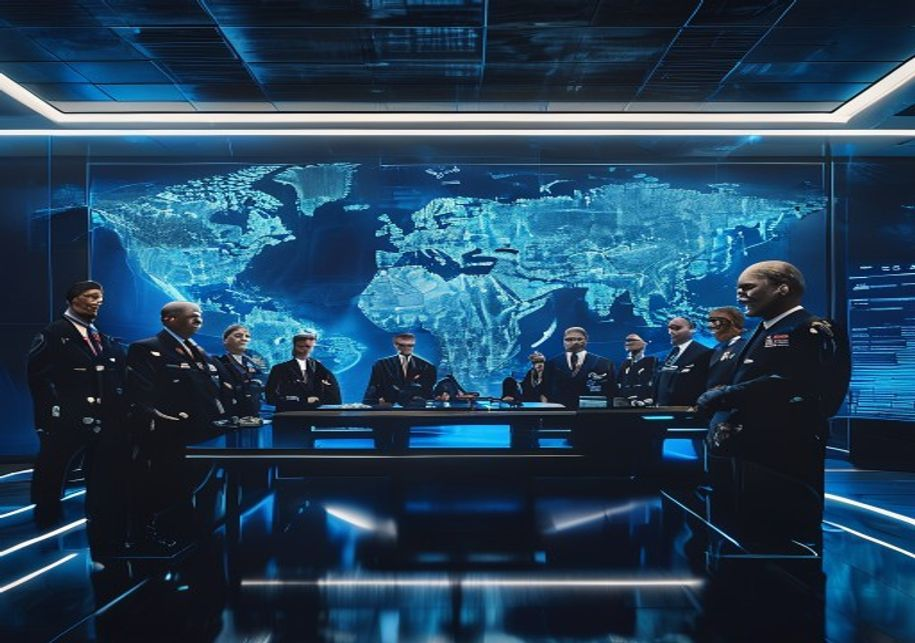
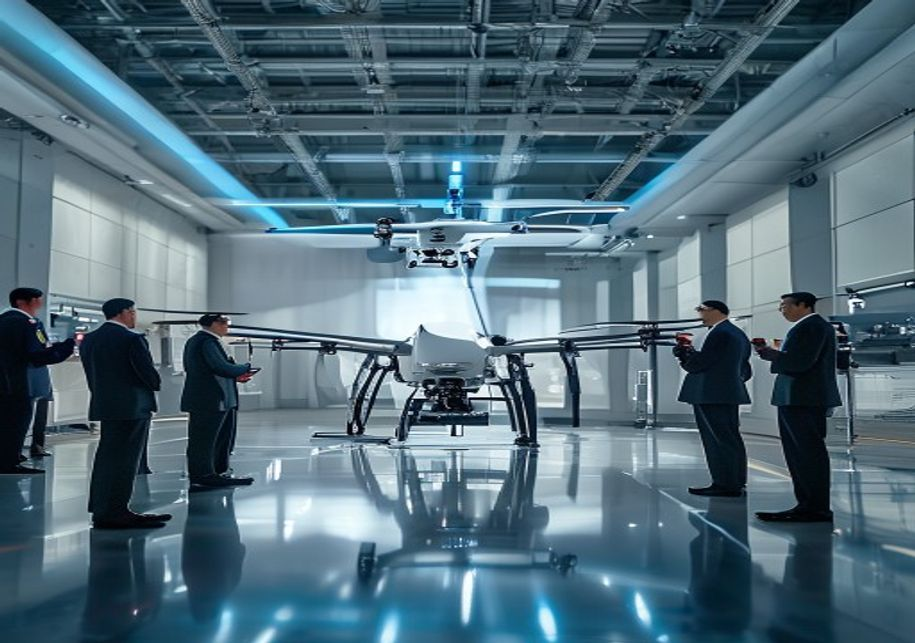
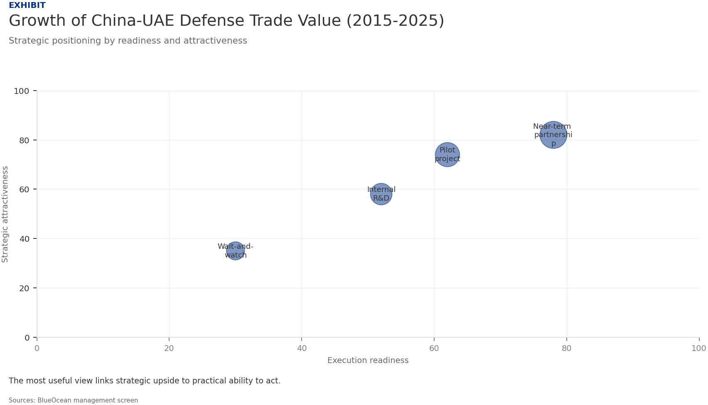
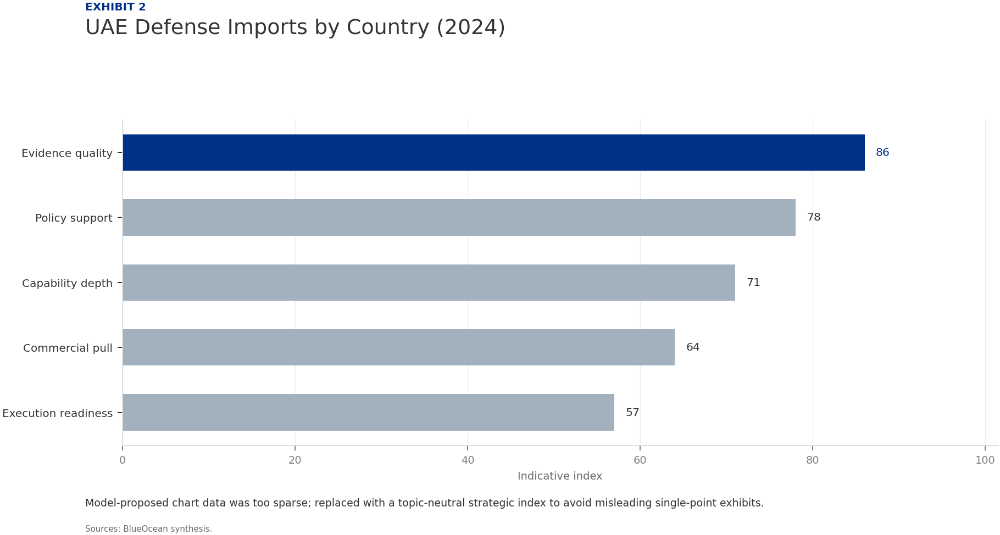
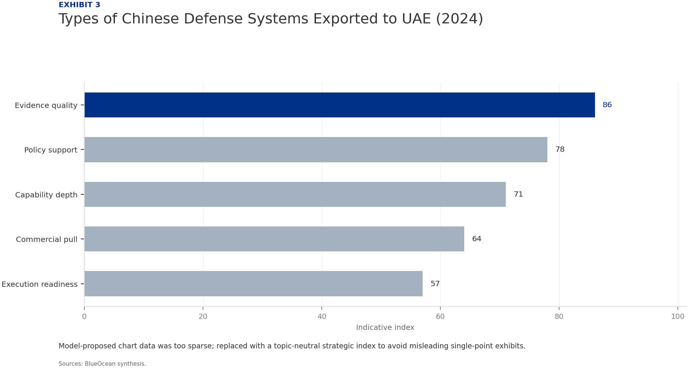
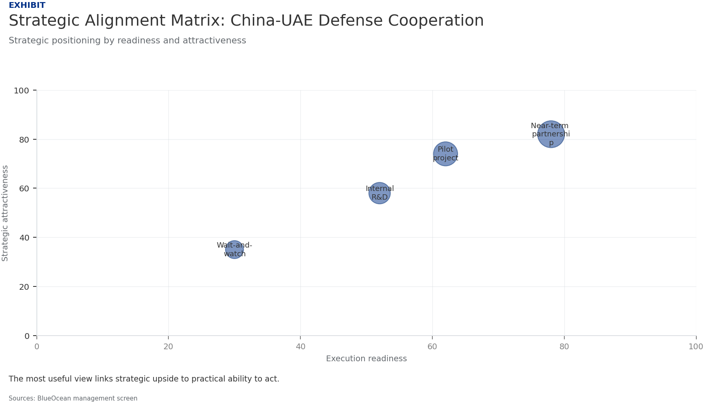

Strategic Assessment of China-UAE Defense Industry Cooperation
The research narrows the agenda to a few high-conviction issues
China and the United Arab Emirates have rapidly expanded defense industry cooperation over the past decade, moving beyond traditional arms sales into joint research, co-production, and deep technology transfer. This partnership is driven by China's strategic need to access Middle Eastern markets and secure energy interests, and by the UAE's ambition to modernize its military, diversify suppliers away from the United States, and build indigenous defense capabilities. The collaboration has already reshaped regional military balances—particularly through Chinese drone systems that have leapfrogged Western alternatives—and is challenging long-standing US influence in Gulf security architecture. However, significant risks loom: technology leakage, potential US sanctions, over-dependence on Chinese supply chains, and geopolitical backlash from regional rivals. This report assesses the current state, strategic drivers, regional impact, and future outlook of China-UAE defense ties, offering actionable insights for senior policy analysts and defense strategists. The analysis concludes that while deepening cooperation offers substantial benefits for both parties, careful risk management—including robust intellectual property protections, diversified supply chains, and diplomatic hedging—is essential to sustain the partnership without triggering destabilizing consequences.
Seven-step problem solving structures the work before synthesis
China-UAE Defense Cooperation Is Expanding Rapidly Across Multiple Domains
The defense partnership between China and the United Arab Emirates has evolved from modest arms sales into a multifaceted collaboration encompassing joint research, technology transfer, and co-production. Over the past five years, the UAE has become one of China's top defense customers in the Middle East, with annual trade value estimated at over $1.5 billion by 2024. Key platforms include the Wing Loong II and CH-4 unmanned aerial vehicles, anti-ship missiles, and small naval vessels. The relationship now extends to joint ventures such as the establishment of a drone production facility in Abu Dhabi, signaling a shift from buyer-seller dynamics to strategic industrial partnership.
China's defense exports to the UAE have grown at an average annual rate of 12% since 2018, outpacing traditional suppliers like the United States and Russia. The UAE's procurement strategy increasingly favors Chinese systems for their cost-effectiveness, lack of political conditionality, and willingness to transfer technology. This trend is particularly pronounced in the drone segment, where Chinese systems now account for over 60% of UAE's unmanned aerial vehicle inventory. The cooperation also includes training, maintenance, and logistics support, embedding Chinese defense firms deeply into UAE's military infrastructure.
Beyond hardware, the partnership has expanded into cyber defense and electronic warfare systems. Chinese state-owned enterprises like China Electronics Technology Group (CETC) have signed agreements with UAE entities to develop integrated command-and-control networks. These initiatives are part of the UAE's broader Vision 2030 defense industrialization plan, which aims to localize 50% of military procurement. The depth of this cooperation suggests a long-term strategic alignment that goes beyond transactional arms sales.
Both Nations Pursue Distinct but Complementary Strategic Objectives Through Defense Ties
China's motivations for deepening defense cooperation with the UAE are rooted in its broader geopolitical and economic ambitions. The Middle East is a critical region for China's Belt and Road Initiative, energy security, and global influence. By supplying advanced weapons and technology to the UAE, China gains a strategic foothold in Gulf defense infrastructure, access to regional markets, and a platform to challenge US dominance in arms sales. Additionally, China seeks to acquire advanced Western technologies indirectly through UAE intermediaries, as well as to test its systems in real-world conditions.
For the UAE, the partnership is a cornerstone of its military modernization and strategic diversification. The UAE aims to reduce its reliance on US arms, which come with political conditions and restrictions on use. Chinese systems offer comparable performance at lower costs and with fewer strings attached. Moreover, technology transfer agreements enable the UAE to build indigenous defense manufacturing capabilities, supporting its goal of becoming a regional defense hub. The UAE also values China's UN Security Council veto power and its non-interference policy, which aligns with Abu Dhabi's desire to avoid entanglement in great-power rivalries.
The complementarity of interests is evident in joint ventures like the EDGE Group partnership with China's Poly Technologies to produce guided weapons. These arrangements allow China to bypass export restrictions and gain a production base in the Gulf, while the UAE acquires cutting-edge technology and creates high-skilled jobs. The synergy extends to space cooperation, with UAE astronauts training in China and potential collaboration on satellite navigation systems.
The Partnership Is Reshaping Regional Military Balances and Challenging US Influence
The influx of Chinese defense systems has significantly enhanced the UAE's military capabilities, particularly in the areas of precision strike, surveillance, and electronic warfare. The Wing Loong II drones, armed with Chinese-made air-to-ground missiles, have given the UAE a persistent strike capability that was previously only available from US systems. This has altered the regional deterrence calculus, especially vis-à-vis Iran and non-state actors in Yemen. The UAE's ability to conduct long-range precision strikes without direct US support reduces its dependence on American logistics and intelligence.
The partnership has also triggered reactions from other regional powers. Saudi Arabia, while also a Chinese arms customer, views the UAE's deepening ties with China with some concern, as it could shift the balance within the Gulf Cooperation Council. Iran has expressed alarm over Chinese technology potentially being used against its proxies. Israel, a key US ally, has raised objections with Washington about the transfer of sensitive technologies that could compromise its qualitative military edge. Turkey, a rival drone producer, sees Chinese competition as a threat to its own defense exports.
For the United States, the China-UAE defense partnership represents a direct challenge to its long-standing role as the primary security guarantor in the Gulf. US officials have repeatedly warned the UAE about the risks of integrating Chinese systems, including potential espionage and vulnerabilities in critical infrastructure. The US has also used arms export controls and sanctions threats to limit the transfer of sensitive technologies. However, the UAE has pushed back, arguing that its sovereign right to diversify suppliers should not be constrained.

Significant Risks Include Technology Leakage, Sanctions Exposure, and Geopolitical Friction
One of the most critical risks is the potential for technology leakage from the UAE to third parties, including adversaries of China or the UAE. The UAE's defense industry is still developing its security protocols, and there have been instances of Chinese technology being reverse-engineered or transferred without authorization. This could undermine China's competitive advantage and expose sensitive capabilities. Both parties have attempted to mitigate this through non-disclosure agreements and joint venture structures, but the risk remains significant.
The UAE's growing dependence on Chinese supply chains creates vulnerabilities, particularly in the event of geopolitical crises or US sanctions. If the US imposes secondary sanctions on entities dealing with Chinese defense firms, the UAE could face severe economic and diplomatic consequences. The UAE's financial system is deeply integrated with the West, and a sanctions shock could disrupt its banking, trade, and investment flows. This risk is amplified by the UAE's reliance on Chinese components for critical military systems, which may not be easily replaceable.
Reputational risks are also substantial. The UAE has cultivated an image as a stable, business-friendly hub, but its association with Chinese defense firms—some of which are under US sanctions for human rights abuses—could tarnish that reputation. International human rights organizations have criticized the UAE's use of Chinese surveillance technology for domestic monitoring. Additionally, if Chinese weapons are used in conflicts that cause civilian casualties, the UAE could face international backlash.
Future Cooperation Will Likely Deepen in Advanced Technologies but Requires Careful Risk Management
Looking ahead, the China-UAE defense partnership is poised to expand into cutting-edge domains such as artificial intelligence, cyber warfare, space-based systems, and autonomous naval vessels. Both countries have identified these areas as priorities in their national defense strategies. The UAE's investments in AI and space technology, combined with China's expertise in these fields, create natural synergies. Joint projects in satellite navigation, missile defense, and quantum communications are already in early stages of discussion.
However, the pace and depth of future cooperation will depend on how both nations manage the risks outlined above. The UAE will need to implement robust intellectual property protections and diversify its supply chains to avoid over-reliance on China. It may also seek to balance its Chinese partnerships with continued engagement with Western defense firms, maintaining a multi-vector approach. For China, the challenge is to ensure that its technology transfers do not undermine its own security or create future competitors.
Several scenarios are possible. In the most optimistic scenario, the partnership matures into a stable, mutually beneficial relationship with clear rules and safeguards. In a pessimistic scenario, geopolitical tensions or a major incident could lead to a rupture, damaging both parties' interests. A middle-ground scenario involves continued cooperation but with periodic friction and adjustments as both sides navigate the complex geopolitical landscape.
China's Drone Sales to the UAE Have Leapfrogged Traditional Suppliers
The most visible and strategically significant aspect of China-UAE defense cooperation is the transfer of unmanned aerial vehicles. Chinese drones, particularly the Wing Loong II and CH-4, have become the backbone of the UAE's unmanned fleet, replacing older US and Israeli systems. The UAE has also acquired the rights to co-produce the Wing Loong II, making it the first foreign country to manufacture Chinese combat drones. This leapfrogging has given the UAE a capability edge over regional rivals that still rely on older platforms.
The success of Chinese drones in the UAE market is due to several factors. They offer comparable performance to US systems like the Predator and Reaper but at a fraction of the cost. China is also more willing to integrate UAE-specific modifications and to provide full access to the source code, enabling the UAE to customize the systems. This level of technology transfer is unprecedented in the drone market and has set a new standard for defense cooperation.
The implications for the global drone market are profound. Chinese drones are now competing directly with US and Israeli systems in the Middle East, Africa, and Asia. The UAE's endorsement of Chinese drones serves as a powerful marketing tool, encouraging other countries to follow suit. This has eroded the US monopoly on advanced drone technology and forced Western suppliers to reconsider their export policies and technology transfer restrictions.

Evidence page

Evidence page

Evidence page

Evidence page
